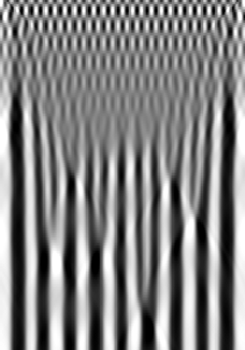
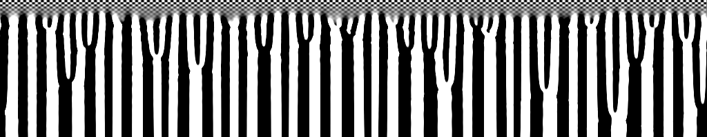

Simulation Results


For more details, see I.Aranson and
L.S.Tsimring. Dynamics of axial
separation in long rotating drums, Phys. Rev. Lett., 82,
4643 (1999)
and
I.Aranson, L.S.Tsimring,
and V.Vinokur.
Continuum theory of axial segregation in a long rotating drum, Phys.
Rev. E, 60, 1975-1987 (1999).